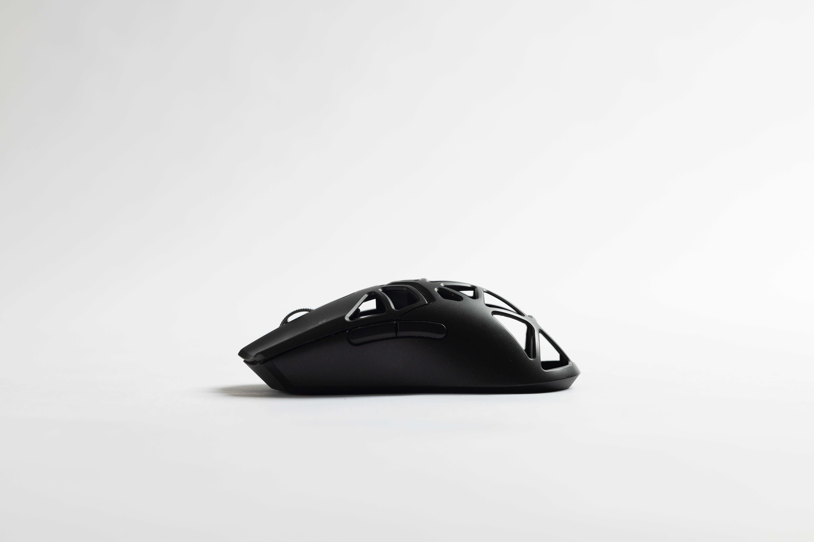

shape & ergonomics
picking a shape that fits your hand size is essential to maximising your performance when it comes to aiming in any FPS title. The different design philosophies all provide something unique to either build upon your strengths or try to subdue your weaknesses. an example of this might be a player with a larger hand that is naturally stable on their hand. picking a medium sized mouse that will provide the player with more dexterity and freedom of movement might be ideal. for the opposite, a player with a lot of rapid movements might instead prefer more stability to avoid dealing with instability due to the mouse shape not having a clear point of contact/support.
mouse shape designs usually slot in to two categories, symmetrical and "ergo" ergo meaning it's formed after the right hand and being slanted in a way for the hand to land naturally on top of it. whilst some of the most popular ergo shapes have somewhat of a cult following the drawbacks of using an ergo shape are clear: lack of dexterity, weight restrictions due to size and volume, poor control over smaller movements due to restrictive design as it's intended to be held in one way and one way only. symmetrical mice usually offer a wider range of grip styles for people to use although at the cost of comfort at times. the styles of symmetrical shapes that are being offered, are usually more widely used nowadays as companies have moved more to a "one size fits all" approach to maximise sales as well as many players not knowing what they like until they find the patch of grass that is truly greener.